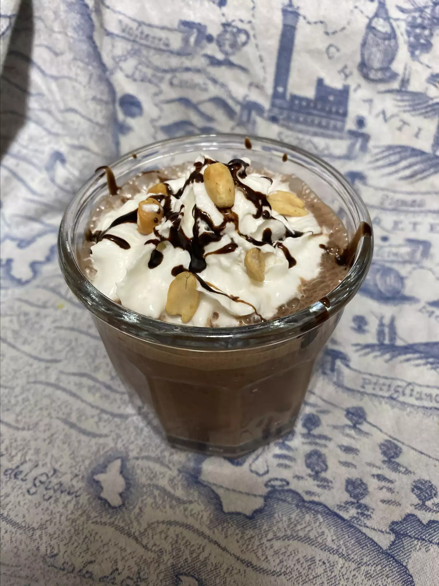

Protein Milkshake

This milkshake has extra protein from black beans, the deep chocolate taste is from cacao (not to be confused with cocoa) powder and is dressed up with optional whipped cream, peanuts, and chocolate drizzle.
Ingredients
Here are the ingredients you will need to make this recipe.
- 3/4 cup chocolate almond milk
- 2 tablespoons powdered peanut butter
- 1 tablespoon cacao powder
- ¼ cup black beans, rinsed and drained
- ½ cup ice
- Combine chocolate almond milk, peanut butter powder, and cacao powder in a high-speed blender. Add black beans and ice. Secure lid into place. Blend on speed variable 1, slowly moving up to the top speed. Blend for 1 minute until ice is incorporated.
- Pour milkshake into a tall glass.
Other recipes